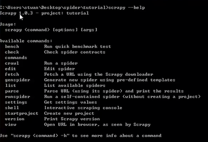
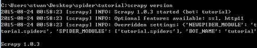
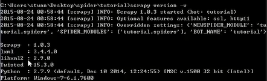

1、help、version
help：scrapy的基本命令，用于查看帮助信息。
version：查看版本信息，可见-v参数查看各组件的版本信息；
①help

② version

我们可以清楚看到，scrapy版本为1.0.3
③在version后加-v 会列出更加详细的信息

2、startproject： 用于新建一个工程
3、genspider：在工程中产生一个spider
4、list：列出工程中都有那些spider
5、view、parse：view: 查看也页面源码在浏览器中显示的样子
6、shell：一个非常有用的命令，可用于调试数据、检测xpath、查看页面源码，等等
7、runspider：运行自包含的爬虫
8、bench：执行一个基准测试；可用来检测scrapy是否安装成功；
【本文由麦子学院独家原创，转载请注明出处并保留原文链接】